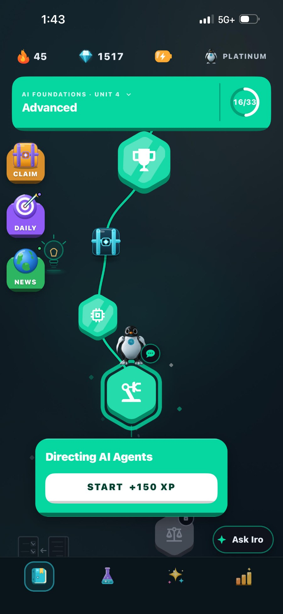
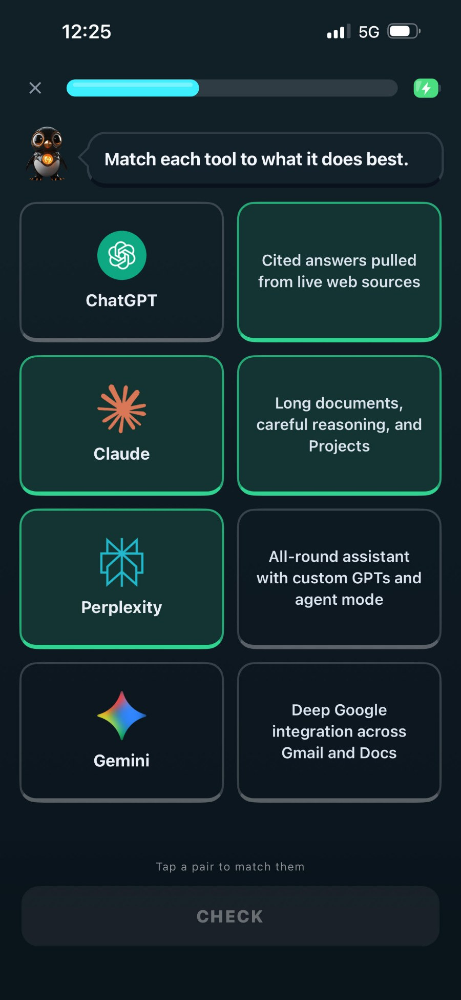
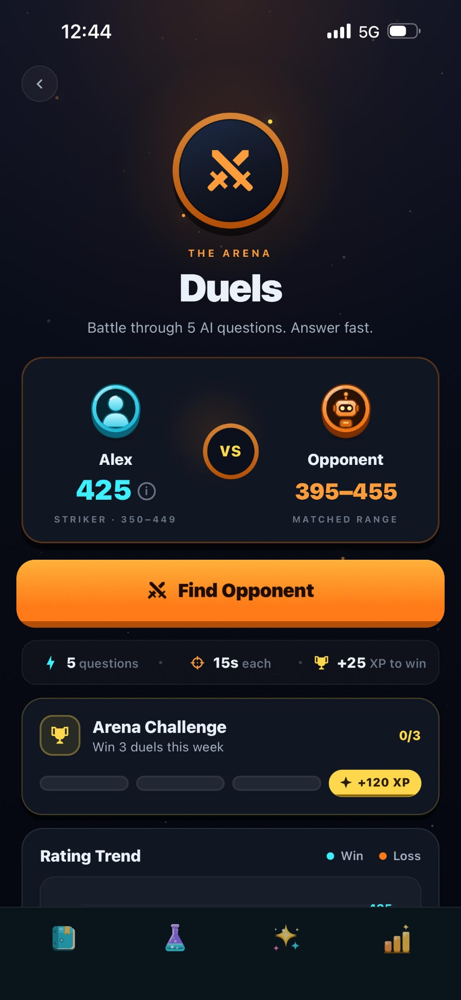

Best apps to learn AI in 2026, compared
"Learning AI" can mean two different things: learning to use AI tools well (prompting, judgment, tool choice) or learning the theory and engineering behind AI (math, machine learning, building models). The right app depends on which one you want. Here is how the leading options stack up.
Editorial note: Iro AI is our app. Where it appears below we say so, and it has to earn its spot by the same criteria as everything else.
| App | Best for | Format | Typical session | Free tier | Platforms |
|---|---|---|---|---|---|
| Iro AI | Using AI tools well, plus generated paths on any topic | Gamified active practice | ~5 min | All 29 paths open; 1 new lesson a day | iOS + web app (Android in development) |
| Brilliant | Math, logic, CS & ML foundations | Interactive lessons | 10–20 min | Limited / trial | iOS, Android, web |
| DataCamp | Data science, Python, R, SQL, applied ML | In-browser coding exercises | 10–30 min | Limited | iOS, Android, web |
| Coursera / DeepLearning.AI | University-style AI courses & certificates | Video + quizzes + projects | 1–3 hrs | Audit free | Web, mobile |
| Udemy | One-off deep dives on a specific tool | Video courses | Variable | Paid (frequent sales) | Web, mobile |
| Khan Academy | Free foundations + Khanmigo tutor | Video + practice | Variable | Yes | Web, mobile |
| YouTube | Free, ad-hoc tutorials on anything | Video (unstructured) | Variable | Yes (ads) | All |
| Duolingo | Languagesnot AI | Gamified | ~5 min | Yes | All |
Pricing, platforms, and free tiers change often. Check each app for current details. Last reviewed June 2026.
Best app to learn AI by goal
- Best for getting good at using AI (most people): Iro AI. Short daily reps on prompting, judgment, and tool choice across ChatGPT, Claude, Gemini, and Perplexity.
- Best for absolute beginners: Iro AI or Khan Academy. Both start from zero with clear explanations.
- Best for data science & coding: DataCamp. Hands-on Python, R, SQL, and applied ML.
- Best for math & ML theory: Brilliant. Interactive foundations in logic, math, and how models work.
- Best for a recognized certificate: Coursera, especially Andrew Ng's DeepLearning.AI courses.
- Best for a single specific tool: A focused Udemy course or a YouTube playlist.
- Best free option: Iro AI's free tier, Khan Academy, or YouTube.
Why an app beats a course for most people
For the majority of learners, the deciding factor is whether you come back tomorrow. A 12-hour video course you never finish teaches less than five focused minutes a day for a month. That is why a gamified, habit-based app tends to win for everyday AI fluency: it removes the activation energy and rewards consistency.
The other differentiator is active vs. passive learning. Watching someone prompt ChatGPT is not the same as prompting it yourself, getting feedback, and trying again. Apps built around active recall (writing prompts, evaluating outputs, spotting hallucinations, comparing models) produce skills that actually transfer to your own work.
Where Iro AI fits
Iro AI is the Duolingo for AI. It is a mobile-first app for building practical, everyday AI fluency through short, active, gamified sessions, not a bootcamp and not a developer-only course. It covers 29 learning paths — 477 lessons and 3,000+ exercises across 24 exercise types. Named tool courses include ChatGPT, Claude, Gemini, Perplexity, Grok, Microsoft Copilot, NotebookLM, Suno and ElevenLabs. Applied paths cover Excel and AI, AI for email, AI slides and decks, AI side hustles, vibe coding, AI agents and automation. Role paths cover business, marketing, finance, managers, healthcare, school and job hunting. Paths run from 5-lesson sprints to a 33-lesson AI Foundations flagship, averaging just under five exercises a lesson. A Prompt Lab gives you feedback on real prompts, timed duels test recall under pressure, and XP, streaks, and 16 ranks keep the habit going. Ask Iro, the built-in AI coach, explains graded answers and breaks down concepts by chat or voice.



And Iro is not limited to AI topics. Custom Paths (a Pro feature) build a complete, structured path in seconds from four kinds of input: a topic you type (negotiation, public speaking, guitar, fitness, "grow my business"), up to four screenshots, a TikTok or YouTube link, or a PDF up to 10MB. You pick 3, 5 or 7 lessons and a starting level, and the course comes back in the language of your topic — a German topic yields a German course — with the same interactive exercises and progress tracking. Community Paths let you browse paths other learners have built, free; taking one into your own library is Pro. None of the other apps in this comparison can generate a course on an arbitrary topic you name.
Iro is free to start on iOS, or in any browser at app.tryiro.com, with progress that syncs to the app. Every one of the 477 lessons is open on the free tier — nothing is locked behind Pro. A Battery paces you to one new lesson a day, and replays, review sessions, the Daily Challenge and the weekly AI news briefing with its quiz never cost a charge. Wrong answers cost nothing. Pro is unlimited lessons, unlimited Ask Iro coaching, Custom Path generation, the Prompt Lab, the Image Lab, and AI Duels for $49.99 a year (about $4.17 a month, with a 7-day free trial) or $9.99 a month. The fastest way to see where you stand is the free AI IQ test: 10 questions, about two minutes, no signup.